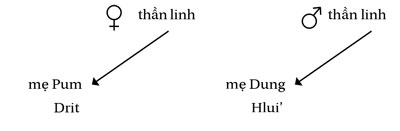
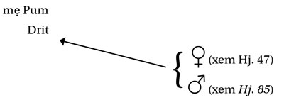
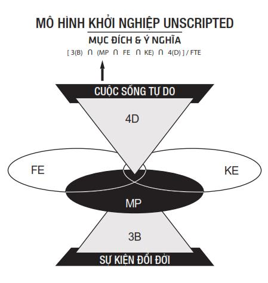

Lời Kết
Chatterton và Kohler đã định danh được U-869 vào năm 1997. Cho đến ngày nay con tàu vẫn còn nhiều bí ẩn. Tại sao U-869 tiếp tục đi tới New York sau khi đã có lệnh chuyển hướng về Gibraltar? U-869 đã bị tiêu diệt như thế nào? Các thủy thủ đã hy sinh ra sao?
Những câu hỏi trên có lẽ sẽ không bao giờ có đáp án: chiếc U-boat đã đắm cùng toàn bộ đoàn thủy thủ và không có nhân chứng. Tuy nhiên chúng ta có thể dựng lại kịch bản khả dĩ nhất. Kịch bản đó như sau:
Hư hại nặng nề ở phòng điều khiển của U-869 gần như chắc chắn là do chính ngư lôi của nó gây ra. Vào năm 1945, các U-boat như U-869 mang hai loại ngư lôi. Ngư lôi “quỹ đạo” thường được lập trình để đi theo một tuyến đường nhất định tới mục tiêu và sử dụng cơ chế lái hồi chuyển. Ngư lôi âm dẫn là loại tiên tiến hơn, lần theo âm thanh tạo ra từ chân vịt của tàu địch. Tuy vậy, cả hai loại ngư lôi này đều có lúc quay lại tấn công chính U-boat đã phóng chúng. Ngư lôi như thế gọi là đạn chạy vòng. U-boat đã ghi nhận một số trường hợp khi đạn chạy vòng qua bên trên hoặc bên dưới tàu. Ngư lôi dẫn hướng bằng âm thanh đặc biệt nguy hiểm khi chạy vòng, vì nó bám theo âm thanh từ động cơ điện, máy bơm và máy phát của chính tàu mẹ. Để tránh bị trúng đạn, chỉ huy U-boat được lệnh phải cho tàu lặn gấp ngay sau khi bắn ra một ngư lôi dẫn hướng bằng âm thanh.
Chỉ huy tàu thường nhận được cảnh báo sớm về đạn chạy vòng. Chân vịt của ngư lôi quay vài trăm vòng một phút và tạo ra một âm thanh ro ro tần số cao đặc trưng. Trắc thủ thủy âm của U-boat có thể nghe thấy âm thanh từ rất xa và khi ngư lôi tiến đến gần hơn thì toàn bộ đoàn thủy thủ cũng sẽ nghe được. Khi nhận được cảnh báo như thế, viên chỉ huy thường có đủ thời gian để cho tàu lặn xuống hoặc đổi hướng để tránh ngư lôi. Lịch sử có lẽ sẽ không bao giờ biết rõ bao nhiêu trong số 65 U-boat vẫn còn thất lạc là nạn nhân của đạn chạy vòng. Về bản chất, tai nạn do ngư lôi chạy vòng hầu như không được báo trước và không có người chứng kiến.
Trong điều kiện lý tưởng: biển lặng, truyền âm tốt trong nước, phát hiện và báo cáo sớm, Neuerburg có thể có 30 giây hoặc hơn để ứng phó với đạn chạy vòng. Ở điều kiện tệ hơn hoặc nếu trắc thủ thủy âm lưỡng lự (hoặc cả hai), anh sẽ có ít thời gian hơn.
Ngư lôi sẽ không phát nổ ngay lập tức khi va vào U-869. Thay vào đó, sẽ có độ trễ khoảng một giây giữa va chạm và phát nổ, là thời gian để bộ phận kích nổ trên mũi ngư lôi bật và gây nên vụ nổ. Tiếng tách đó – thứ âm thanh không lẫn vào đâu được với lính tàu ngầm – có thể nghe được ngay cả khi ngư lôi va chạm với mục tiêu ở xa. Âm thanh hẳn kéo đủ dài trước cú nổ để các thủy thủ có thể nhận ra.
Phần lớn ngư lôi Đức mang khoảng 280 đến 350 kilôgam thuốc nổ có sức công phá mạnh. Căn cứ vào hư hại của xác tàu, quả ngư lôi chạy vòng nhiều khả năng đã va chạm vào phần ngay bên dưới tháp chỉ huy, trung tâm của con tàu. Những người ở trong khu vực phòng điều khiển, bao gồm cả Neuerburg và Brandt, sẽ bị cú nổ xé tan xác và gần như bốc hơi hoàn toàn. Những người ở các khoang lân cận có lẽ cũng tử vong ngay lập tức do chấn động hoặc do bị quăng vào máy móc. Các đợt sóng xung kích sẽ lan tới cả mũi và đuôi của con tàu dài 77 mét, bắn văng một số thủy thủ lên trần, vách hoặc vào chính đồng đội của họ và hạ gục những người khác như con rối. Các cửa thép bị giật tung. Cú nổ mạnh đến mức nó làm cong cửa sập thép dẫn vào khoang động cơ diezen và giật rời cửa sập thép ở ống phóng lôi trong khoang ngư lôi mũi tàu, là khu vực cách xa tâm chấn nhất. Lực từ cú nổ đủ mạnh để làm bật các cửa sập phía trên đầu, từng được Chatterton và Kohler phỏng đoán là do các thủy thủ mở để thoát khỏi con tàu đang đắm.
Từ các cánh cửa mở và lỗ thủng, nước biển lạnh giá sẽ tràn vào trong tàu. Không khí sẽ bắt đầu nhường chỗ cho nước trong một quá trình ồn ào, tàn nhẫn và không khoan nhượng. Thân thể sẽ bị quăng quật như giẻ rách vào máy móc và các cấu trúc khác. Đối với những ai còn sống sót, không khí sẽ ào ra ngoài tàu như một cơn lốc xoáy. Máy móc, phụ tùng, quần áo, dụng cụ sẽ bị cuốn lên theo những góc vuông trong những cột khí hung tợn. Một vài thứ trong số đó sẽ lọt ra ngoài và trở thành rác đại dương. Không ai có thể bám trụ. Thi thể (một số trong đó có lẽ không còn đầu hoặc chân tay) sẽ bắt đầu hành trình trắc trở nổi lên mặt nước.
Có lẽ không cần đến 30 giây để U-boat hoàn toàn ngập nước. Con tàu sẽ chạm đáy đại dương trong chưa đầy một phút. Nếu ai đó sống sót sau vụ nổ và bằng cách nào đó thoát khỏi con tàu và ngoi được lên mặt nước, anh ta sẽ không trụ nổi quá một giờ trong làn nước giá buốt. Tàu địch mục tiêu giờ đã ở cách xa đến mười phút, với tiếng động cơ chạy, tiếng gió và nước xô hai mạn, gần như chắc chắn họ sẽ không nghe hoặc nhìn thấy được gì.
Nguyên nhân khả dĩ nhất gây trục trặc liên lạc giữa U-869 và bộ tư lệnh là điều kiện khí quyển, tuy cũng có khả năng hệ thống điện đài của tàu gặp trục trặc cơ khí. Tuy Neuerburg có thể do dự việc phát thông điệp có thể khiến mấy tay Đồng Minh nghe lén định vị được tàu, việc nhận thông điệp từ bộ tư lệnh không dẫn đến nguy hiểm đó. Việc U-869 tiếp tục đến New York sau khi bộ tư lệnh đã phát lệnh tới Gibraltar cho thấy Neuerburg gần như chắc chắn đã không hề nhận được lệnh chuyển hướng.
Về U-857 – tàu ngầm đã săn tìm mục tiêu ven bờ đông Hoa Kỳ tháng tư năm 1945 và là con tàu mà Chatterton và Kohler đoán là U-Gì trong nhiều tháng trời, số phận của nó vẫn là một bí ẩn. Nó vẫn được coi là mất tích vì lý do không xác định.
Harbor Inn, tức Horrible Inn, không còn tồn tại. Thế chỗ nó ở Brielle, bang New Jersey, trong bãi đỗ xe cạnh Seeker, là quán Shipwreck Grill sang trọng, phục vụ các khách hàng ăn vận bảnh bao các món như súp kem tôm hùm và cá hồi nướng mật ong phủ sốt tôm hùm với mù tạt Dijon. Các thợ lặn lớn tuổi ghé vào đó nhấm nháp đều thề rằng nếu ngồi đủ lâu, họ vẫn có thể nghe tiếng Bill Nagle gọi thêm một ly Jim Beam.
Seeker – con thuyền lặn do Nagle lên ý tưởng, đóng và dùng để khám phá U-Gì – vẫn đang chạy thuê. Danny Crowell – chủ nhân hiện tại của nó – giong thuyền tới Stolt Dagali, USS Algol và nhiều xác tàu nổi tiếng khác. Crowell hiếm khi tới U-869. “Tôi sẽ đi nếu khách hứng thú” anh nói. “Nhưng ngày nay không còn nhiều thợ lặn kiểu ấy nữa.”
Một số thuyền lặn khác, như Eagle’s Nest của Howard Klein và John Jack của Joe Terzuoli, tiếp tục đưa khách tới U-869. Tuy nhiên, sau khi Chatterton lấy được nhãn định danh từ xác tàu năm 1997, chiếc U-boat không cho thêm hiện vật đáng chú ý nào. Song Chatterton và Kohler tin rằng vẫn có chút khả năng là nhật ký của chỉ huy trưởng Neuerburg còn tồn tại và chôn vùi đâu đó dưới lớp bùn lầy, tàn tích. Nếu lấy được quyển nhật ký ấy lên và chữ viết còn nguyên vẹn, lịch sử sẽ có cái nhìn của người trong cuộc về chuyến tuần định mệnh của U-869.
Công nghệ lặn scuba sâu đã tiến triển nhiều kể từ thời Chatterton và Kohler định danh U-869. Ngày nay, có đến 95% thợ lặn thám hiểm thở trimix – hỗn hợp khí nhiều người từng cho là tà thuật vào đầu những năm 1990. Khoảng một nửa thợ lặn thám hiểm sâu đã từ bỏ thiết bị tuần hoàn (tức tổ hợp bình khí và bộ điều áp đã tồn tại nhiều thập kỷ) để dùng rebreather – thiết bị nhỏ gọn hơn, điều khiển bằng điện toán, có khả năng tái chế không khí thở ra. Rebreather cho phép lặn ở độ sâu lớn vì thợ lặn không phải mang theo cùng lúc nhiều bình khí giảm áp. Tuy nhiên, nó vẫn chưa ổn định được như hệ thống tuần hoàn. Người ta cho rằng trên toàn thế giới có đến hơn một tá thợ lặn đã thiệt mạng khi dùng rebreather. Chatterton là một trong những thợ lặn đầu tiên sử dụng công nghệ mới này. Kohler vẫn trung thành với thiết bị tuần hoàn của mình.
Năm 1997, chưa đầy một tháng sau khi định danh U-869, Chatterton ly hôn với Kathy. Một năm sau, khi tham gia đoàn thám hiểm cao cấp tới Hy Lạp, Chatterton trở thành người đầu tiên dùng rebreather lặn HMHS Britannic – tàu chị em của Titanic. Tháng mười năm 2000, trong một chuyến đi tới Biển Đen do Yad Varshem (bảo tàng Holocaust của Israel) và Bảo tàng tưởng niệm Holocaust Hoa Kỳ tài trợ, anh đã tìm kiếm Struma – con tàu chở đầy người tị nạn mà trên đó, 780 người (chủ yếu là người Do Thái từ Rumani) đã bỏ mạng khi chạy trốn thảm sát vào năm 1942.
Tháng 11 năm 2000, tuyến chương trình Nova của đài PBS phát sóng Hitler’s Lost Sub (Con tàu ngầm thất lạc của Hitler) – bộ phim tài liệu về chiếc U-boat bí ẩn. Đây là một trong những tập có tỷ suất người xem cao nhất của Nova. Cùng tháng ấy, Chatterton được chẩn đoán mắc ung thư tế bào vảy ở amiđan đã di căn, có khả năng là do từng tiếp xúc với chất độc màu da cam tại Việt Nam. Anh trở lại với lặn thám hiểm vào tháng năm năm sau. Ngày 11 tháng chín, năm 2001, khi các máy bay bị bọn khủng bố cướp lao vào các tòa tháp của Trung tâm thương mại thế giới, Chatterton đang giám sát nghiệp vụ lặn thương mại ở bên kia đường, phía dưới Trung tâm tài chính thế giới, đối diện Tháp Một. Anh và các thợ lặn thoát khỏi khu vực mà không bị thương tích.
Tháng một năm 2002, Chatterton kết hôn với Carla Madrigal – người bạn gái anh quen được ba năm. Hai người tổ chức lễ cưới và trăng mật ở Thái Lan, sau đó chuyển đến sống ở một ngôi nhà bên bờ biển New Jersey. Tháng chín năm 2002, Chatterton từ giã nghề lặn thương mại sau 20 năm đeo đuổi để theo học ngành lịch sử và lấy chứng chỉ dạy học ở Đại học Kean ở Union, bang New Jersey. Sau khi tốt nghiệp, anh hy vọng sẽ được dạy lịch sử ở cấp trung học hoặc đại học. Chatterton và Kohler vẫn thân nhau và vẫn hẹn ăn tối ở tiệm Scotty’s. Tháng năm năm 2003, bệnh ung thư của Chatterton thuyên giảm. Tháng bảy năm 2003, anh bắt đầu dẫn chương trình Deepsea Detectives (Thám tử biển sâu) về xác tàu đắm cho History Channel. Kohler thậm chí tham gia dẫn vài tập.
Chatterton không còn dính dáng nhiều tới U-869 sau ngày anh định danh được nó. Không như Kohler, anh không cảm thấy mình có nghĩa vụ cấp thiết phải truy tìm gia đình các thủy thủ hay báo tin. “Tôi cũng có quan tâm đến những việc ấy” Chatterton nói. “Nhưng ghi tạc trong tim thì là Richie. Ngoài Richie ra còn ai trên đời này sẽ làm nữa.”
Người đầu tiên Kohler gọi sau khi anh và Chatterton định danh U-869 là Tina Marks – bạn gái của anh. Cô đã tin tưởng vào anh, hiểu cảm giác của anh về nghĩa vụ đối với các thủy thủ và gia đình họ và ủng hộ niềm đam mê lặn của anh. Hai người ngày càng gắn bó hơn. Cô có thai. Tuy nhiên, bạn trai cũ của Tina lại quấy rối cô, nài nỉ cô quay lại với anh ta. Cô từ chối. Một ngày năm 1998, khi Tina đang mang bầu tám tháng đứa con của Kohler, người này xuất hiện ở cửa nhà cô và bắn cô bằng một khẩu súng lục chín li, sau đó tự bắn mình. Cảnh sát tìm thấy cả hai chết trong khuôn viên nhà Tina. Chỉ một khoảnh khắc, Kohler đã mất cả tình yêu và tương lai.
Cũng như bao năm qua, môn lặn cứu rỗi anh. Năm 1999, anh đồng chỉ đạo một đoàn thám hiểm Anh-Mỹ để định danh các U-boat thời Thế Chiến I và Thế Chiến II đắm ở eo biển Măng-sơ. Trong 12 mục tiêu, đoàn đã định danh được bốn. Mùa thu năm đó, Kohler mở chi nhánh thứ hai của Fox Glass tại Baltimore. Con trai Richie và con gái Nikki vẫn sống cùng anh và là những học sinh ưu tú.
Kohler vẫn là độc giả cuồng nhiệt của lịch sử, tuy anh nói mình đã đọc khác đi kể từ sau U-869. “Tôi thầm nghi vấn mọi thứ” Kohler nói. “Với tôi, việc đó càng làm lịch sử thêm thú vị.”
Công việc của Kohler với U-869 bước vào giai đoạn mới sau khi anh và Chatterton định danh được con tàu. Năm 1997, anh bắt đầu tìm kiếm gia đình các thủy thủ để báo tin cho họ. Với sự hỗ trợ của Kirk Wolfinger và Rush DeNooyer từ hãng Lone Wolf Pictures (đạo diễn tập Nova đặc biệt về U-boat) và của người khổng lồ của truyền thông Đức là hãng tin Spigel (khi đó cũng bắt đầu làm một bộ phim tài liệu truyền hình về các thợ lặn và U-869), anh đã tìm được thông tin liên hệ của Barbara Bowling. Bà là em gái cùng cha khác mẹ của Otto Brizius – thủy thủ trẻ nhất của U-869 ở tuổi 17. Anh cũng tìm được con gái của Martin Horenburg.
Hóa ra, bà Bowling đã sống gần 20 năm ở bang Maryland. Người cha chung của bà và Otto luôn trìu mến kể về anh từ khi bà còn nhỏ. Bà Bowling lớn lên trong niềm ngưỡng mộ và yêu mến với người anh mình chưa từng gặp và luôn tin rằng anh đang nằm đâu đó dưới đáy đại dương ngoài khơi Gibraltar. Khi Kohler ghé thăm nhà bà Bowling, anh hầu như không tin vào mắt mình. Con trai Mac của bà giống hệt Otto. Tấm ảnh Otto trong Kriegsmarine vẫn được treo đầy tự hào ở nhà Bowling. Với vốn tiếng Đức thông thạo, bà Bowling đồng ý giúp Kohler tìm kiếm gia đình các thủy thủ khác.
Con gái của Horenburg không mấy nhiệt tình khi Kohler liên hệ. Mẹ của bà đã tái hôn sau khi U-869 mất tích và người cha dượng đã nuôi dạy bà như con gái mình. Vì tôn kính cha dượng, bà không muốn tiếp chuyện Kohler. Qua một người trung gian, bà bày tỏ lòng cảm kích với các thợ lặn và gửi họ một số ảnh của cha bà. Chatterton lấy con dao từ trên bàn xuống (đây là con dao đã trò chuyện với anh trong bảy năm qua), đóng gói cẩn thận và mang đến bưu điện. Một tuần sau, con gái Horenburg đã là chủ nhân mới của con dao.
Có một khoảng thời gian Kohler cảm thấy bế tắc trong hành trình tìm kiếm gia đình các thủy thủ. Anh hướng sự chú ý sang cuộc sống cá nhân và bắt đầu hẹn hò với Carrie Bassetti – một quản lý tại công ty dược ở New Jersey và sau này là vợ anh. Anh gặp Bassetti trong một chuyến lặn thám hiểm trên Seeker và cảm thấy động lòng không những với niềm đam mê lặn mà còn còn với máu phiêu lưu bẩm sinh và tình yêu cuộc sống kiểu cổ điển của cô. Đến năm 2001, anh đã lấy được thông tin liên hệ chính xác về gia đình các thủy thủ từ nguồn tin của anh tại Spiegel. Anh đặt chuyến bay tới Đức. Anh cần trực tiếp gặp mặt những người họ hàng ấy.
Ngay trước khi khởi hành tới châu Âu, Kohler thuê một con thuyền để đưa bà Bowling và gia đình tới khu vực xác tàu. Ở đó, anh đọc một đoạn văn tưởng niệm tự viết, sau đó lao xuống nước và buộc một vòng hoa cùng ruy băng vào U-869. Ngày đầu năm mới 2002, với bà Bowling đi cùng làm phiên dịch, Kohler hạ cánh ở Hamburg. Cuối cùng đã đến lúc làm điều anh cần phải làm nhiều năm nay.
Cuộc hẹn đầu tiên của Kohler là với Hans-Georg Brandt – em trai của chỉ huy phó Siegfried Brandt. Hiện đã 71 tuổi và là một kiểm toán viên về hưu, ông Hans-Georg bồn chồn chờ đợi Kohler ở nhà của con trai. Con và cháu nội ông cũng háo hức muốn diện kiến một trong những thợ lặn đã liều mạng sống để tìm kiếm ông Siggi. Kohler gõ cửa. Người mở cửa là Hans-Georg. Nhân dịp này, ông diện quần vải mịn màu be, áo len cardigan nâu và thắt cà vạt. Trong một thoáng, hai người đàn ông chỉ nhìn nhau. Sau đó, ông Hans-Georg bước về trước, bắt tay Kohler và ngắc ngứ nói bằng tiếng Anh:
“Tôi hết sức cảm động vì anh đã tới. Và tôi rất tiếc vì những gì xảy ra với những những thợ lặn dũng cảm thiệt mạng trên U-boat. Chào mừng anh.”
Suốt sáu tiếng, ông Hans-Georg tưởng nhớ về người anh Siggi mà ngày nay ông vẫn yêu quý hệt như thời ông 13 tuổi, khi được Siggi tiết lộ những bí mật trong chiếc U-boat của anh và cho phép ông ngắm nhìn thế giới qua kính tiềm vọng của con tàu. Trong lúc trò chuyện, có những khi ông Hans-Georg quá sức xúc động hoặc đau buồn. Kết thúc buổi gặp mặt, ông Hans-Georg cảm ơn Kohler một lần nữa và giúp anh lấy áo khoác.
“Tôi có thứ này muốn gửi ông” Kohler nói. Anh thò tay vào cặp. Một thoáng sau, anh lấy lên bản lược đồ kim loại mà anh đã tìm thấy gần đây trong khoang động cơ điện của U-869.
“Có lẽ ông đã vào khoang này khi tới thăm anh trai” Kohler nói.
Ông Hans-Georg cầm lấy phiến kim loại và nhìn chăm chú vào những chữ viết và vết gỉ sét của nó. Suốt mấy phút ông không tài nào rời mắt khỏi hiện vật, Cuối cùng, ông lần ngón tay theo các cạnh và bên trên bề mặt hoen gỉ.
“Tôi không thể tin được” ông nói. “Tôi sẽ cất giữ nó mãi mãi.”
Sáng hôm sau, Kohler và bà Bowling lái xe khỏi Hamburg vài kilômét để gặp một bác sĩ phẫu thuật 60 tuổi. Người này – một người đàn ông cao gầy và điển trai – chào đón hai người Mỹ vào nhà mình. Ông giới thiệu mình là Jürgen Neuerburg – con trai của chỉ huy Helmuth Neuerburg của U-869.
Ông Jürgen không còn nhớ gì về cha mình, vì ông mới chỉ lên ba khi U-869 mất tích. Nhưng ông vẫn nhớ rõ những câu chuyện mẹ kể và sự yêu thương trìu mến trong lời mẹ. Suốt nhiều giờ đồng hồ, ông Jürgen chia sẻ những câu chuyện ấy với Kohler, đồng thời cho anh xem hàng chục tấm ảnh và trang nhật ký. Vợ ông cũng chăm chú lắng nghe.
“Từ khi còn là nhỏ, tôi luôn tin cha mình đã mất tích ngoài khơi Gibraltar” ông Jürgen nói. “Khi tôi biết tin các thợ lặn đã tìm thấy con tàu ngoài khơi New Jersey, tôi cực kỳ ngạc nhiên. Nhưng cuối cùng thì cảm nhận của tôi vẫn vậy. Tôi nghĩ mẹ tôi sẽ sốc nếu biết được sự thật sau bao năm tin vào thông tin chính thức về con tàu. Vì thế, tôi thấy nhẹ nhõm vì mẹ sẽ không bao giờ được biết. Mẹ tôi yêu cha say đắm. Cả đời mẹ không tái hôn.”
Kohler hỏi Jürgen về anh chị em của cha ông. Cha ông có một người anh tên là Friedhelm. Khi hỏi ông Jürgen số điện thoại liên hệ với Friedhelm, Kohler nhận được một số điện thoại cũ.
“Tôi không biết bác ấy còn sống không” ông Jürgen nói. “Thật buồn là bác cháu tôi đã không còn liên lạc với nhau.”
Ông Jürgen và vợ cảm ơn những nỗ lực của Kohler và nhờ anh chuyển lời cảm ơn tới Chatterton khi anh quay về New Jersey.
Tối hôm ấy ở khách sạn, Kohler và bà Bowling quay số. Người nghe máy là một phụ nữ lớn tuổi. Bà Bowling giới thiệu mình là em gái của một trong các thủy thủ U-869. Người phụ nữ nói bà rất vui lòng chuyển máy cho chồng.
Trong một giờ đồng hồ tiếp theo, Friedhelm Neuerburg, 86 tuổi, kể về em trai Helmut.
“Giờ đây khi tôi nhắm mắt và nghĩ về em trai mình” Friedhelm nói, “tôi thấy hình ảnh cậu ấy đang làm nhiệm vụ. Tôi nghĩ cậu ấy đã có dự cảm rằng mình sẽ không quay trở về. Cậu ấy đã thực hiện nghĩa vụ của mình.”
Sáng hôm sau, Kohler và bà Bowling lái xe từ Hamburg tới Berlin. Tối hôm ấy, Kohler gặp TS. Axel Niestlé, 40 tuổi, là người đứng đầu một hãng công nghệ tư nhân chuyên về các dự án xử lý chất thải. Học vị tiến sĩ ngành khoa học tài nguyên nước của Niestlé lấy cơ sở chủ yếu là các công trình anh thực hiện ở Bắc Phi. Trong thời gian rỗi, để giải trí, Niestlé đã trở thành chuyên gia hàng đầu thế giới về tái đánh giá các mất mát của U-boat. Chính Niestlé vào năm 1994 đã đưa ra ý tưởng rà soát các liên lạc điện đài bị nghe trộm giữa U-869 và Bộ tư lệnh U-boat: một điều không ai nghĩ tới do lịch sử đã khẳng định chắc nịch rằng U-869 đắm ngoài khơi Gibraltar. Anh gửi các nhận định của mình cho Robert Coppock ở Bộ quốc phòng Anh, rồi Coppock sau đó chuyển thông tin tới Chatterton và Kohler qua thư. Trong cuộc gặp, Kohler không chỉ bất ngờ với bề dày kiến thức mà còn với niềm say mê của Niestlé với U-boat. Anh hỏi vì sao Niestlé không dạy trong trường đại học.
“U-boat là thú vui của tôi” anh nói. “Nếu tôi kiếm tiền từ nó thì biết đâu lại thành nhàm. Chính việc làm thám tử điều tra những chủ đề này mới tạo ra hứng thú. Một khi phát hiện lịch sử có nhầm lẫn, anh bắt đầu điều tra nó và (nếu gặp may) sửa chữa lại lịch sử thì đã mãn nguyện rồi.”
Ngày hôm sau, Kohler và bà Bowling đi tàu điện ngầm Berlin tới một căn nhà cổ kính của một quý bà lớn tuổi. Trên bệ lò sưởi giữa phòng khách là khung ảnh có hình các con bà và một người thanh niên trẻ, đẹp trai thời Thế Chiến II. Ánh mắt người ấy nhìn về trước như đón chờ thời đại mới. Người phụ nữ giới thiệu mình là Gisela Engelmann. Người đàn ông trong ảnh, bà nói, là chồng chưa cưới của bà: Franz Nedel – một trong những lính ngư lôi trên U-869.
Suốt nhiều giờ đồng hồ, bà Engelmann kể cho Kohler về chuyện bà xé mắt Hitler trong ảnh, về chuyện bà trèo lên cột đèn và giương ảnh Hitler cho toàn Berlin thấy, về bữa tiệc chia tay khi Franz và đồng đội bật khóc, về việc giờ đây bà hiểu rõ hơn bao giờ hết đời người chỉ có duy nhất một tình yêu chân chính và với bà tình yêu đó là Franz.
“Hai người chồng của tôi tất nhiên có biết về Franz” bà nói. “Khi tôi kể về Franz cho con, bọn trẻ sẽ đảo mắt và nói: “Mẹ ơi, mẹ kể cho tụi con nghe chuyện này cả trăm lần rồi”.”
Cũng như gia đình Brandt, bà Engelmann vẫn băn khoăn về số mệnh của người thân yêu rất lâu sau khi cuộc chiến kết thúc. Phải đến tháng mười năm 1947 bà mới nhận được thông báo chính thức rằng U-869 được tính vào tổng tổn thất.
“Ngày nào tôi cũng nhớ tới anh ấy” bà kể với Kohler. “Tôi đặt ảnh anh ấy trong phòng ngủ và mỗi ngày, kể từ khi vẫy tay từ biệt anh rồi trải qua hai cuộc hôn nhân và sinh bốn đứa con, tôi đều ngắm nhìn anh.”
Kohler vẫn còn một cuộc hẹn nữa trước khi bay về New Jersey. Anh và bà Bowling bay tới München, thuê một chiếc xe và khởi hành về hướng tây, qua nhiều dặm đường cảnh nông thôn tuyết phủ diễm lệ. Kohler rẽ vào một thị trấn nhỏ tên là Memmingen và đi theo chỉ dẫn. Vài phút sau, anh tới trung tâm thị trấn với phố xá uốn lượn, những tòa nhà hàng trăm năm tuổi và những chóp nhà thờ vươn đến trời xanh. Memmingen, anh nghĩ, là một bức tranh, là nước Đức trong sách truyện mà ông Segal (người lực sĩ trong gánh xiếc) đã tả cho cha mình.
Kohler chạy xe dọc qua đường nhánh nhỏ hẹp cho đến khi tới một trong những ngôi nhà cổ nhất thị trấn. Anh rung chuông. Một phút sau, một quý ông 80 tuổi đẹp lão và đĩnh đạc mở cửa. Trong bộ vét xanh và cà vạt đỏ, với mái tóc trắng như bông chải chuốt hoàn hảo, ông có vẻ đã sửa soạn cho cuộc gặp này nhiều năm nay.
“Tôi là Herbert Guschewski” người đàn ông nói. “Tôi là lính thông tin của U-869. Hân hạnh được đón tiếp.”
Trong phòng khách, ngồi giữa con cháu, ông Guschewski kể với Kohler chuyện ông đã sống sót U-869 ra sao.
Một sáng ấm áp vào tháng 11 năm 1944, chỉ vài ngày trước khi U-869 ra trận, Guschewski lâm bệnh. Khi bước ra ngoài để thở chút không khí trong lành, anh cảm thấy chóng mặt và ngã quỵ bất tỉnh. Những người xung quanh đưa anh tới bệnh viện và anh hôn mê và sốt cao suốt ba ngày liền. Khi anh tỉnh lại, các bác sĩ nói anh đã bị viêm phổi và viêm màng phổi. Tuy U-869 sẽ khởi hành trong vài giờ tới, anh buộc phải ở lại trong khu điều trị tích cực. Người ta thông báo anh có khách tới thăm.
Cửa phòng bệnh mở ra. Đứng trước là chỉ huy trưởng Neuerburg tay cầm sô-cô-la, bánh quy và hoa. Sau Neuerburg là chỉ huy phó Brandt và kỹ sư trưởng Keßler. Và đằng sau họ là nhiều thủy thủ khác trong đoàn. Neuerburg đến gần Guschewski. Anh lau trán và xoa tay người lính thông tin.
“Cậu sẽ ổn thôi, anh bạn” Neuerburg nói.
Brandt bước về phía trước và cầm tay Guschewski.
“Chóng hồi phục nhé” anh nói, nở nụ cười Guschewski từng thấy sau khi anh kể chuyện cười cho Brandt. “Anh sẽ mau khỏi thôi.”
Keßler tiến lên, cùng Horenburg và mấy lính thông tin còn lại. Nhiều người mắt ngấn lệ. Họ chúc Guschewski chóng hổi phục.
“Cuối cùng đã đến lúc nói lời từ biệt” ông Guschewski kể với Kohler. “Tôi linh cảm chúng tôi sẽ không còn gặp lại nhau nữa. Khi tôi nhìn vào mắt những đồng đội, tôi biết họ cũng nghĩ như vậy.”
Như nhiều người khác, ông Guschewski từng tin rằng U-869 đã đắm ở Gibraltar. Khi nghe tin các thợ lặn đã tìm thấy con tàu này ngoài khơi New Jersey, ông đã liên hệ với Spiegel. Qua Spiegel, Kohler mới biết tới ông Guschewski.
Kohler nán lại hai ngày. Ông Guschewski kể về Neuerburg, Brandt, Keßler và những người ông biết trên U-869 suốt hàng giờ đồng hồ. Ông hồi tưởng về cái đêm doanh trại bị dội bom ở Stettin, cảnh ông hát theo tiếng ghi-ta của Neuerburg, chuyện vô tình bắt được Radio Calais, vụ ăn trộm giăm bông của Fritz Dagg, tình bạn của ông với Horenburg. Ông kể rất nhiều về lòng nhân hậu của Brandt, nụ cười thường trực và cách anh, dù mới 22 tuổi, luôn sẵn sàng gánh trên vai nỗi sợ của đồng đội. Ông rất nhớ những người bạn của mình, ông nói với Kohler.
“Tôi thấy thật buồn khi nhìn cách con tàu nằm vỡ nát dưới đáy đại dương” ông Guschewski nói. “Hơn 50 năm qua, tôi luôn nhớ đến vẻ mới mẻ, hùng dũng của con tàu và tôi là một phần của nó. Giờ đây tôi nhìn vào các đoạn phim, ảnh và thấy thi thể của đồng đội của tôi… Hình dung về con tàu như thế với tôi quả là khó khăn và đau buồn.”
“Tôi tin vào Chúa trời và kiếp sau. Sẽ thật tuyệt khi tôi được tái ngộ với những người bạn mình, được nhìn thấy họ một lần nữa và được thấy họ tiếp tục sống trong hòa bình, không phải trong chiến loạn, không phải trong thời kỳ khi quá nhiều mạng sống trẻ trung phải hy sinh vô nghĩa. Tôi muốn được thấy các bạn mình như thế.”
Sau ngày thứ hai trò chuyện, Kohler và ông Guschewski đứng dậy bắt tay nhau. Chuyến bay tới New Jersey của Kohler sẽ cất cánh trong vài giờ nữa và ông Guschewski – một thành viên hội đồng thị trấn có uy tín – phải đi họp tối hôm đó. Mỗi người đều còn những câu hỏi muốn hỏi người kia. Mỗi người đều hứa hẹn một chuyến thăm nữa để những câu hỏi đó sớm được trả lời.
Khi Kohler với tay lấy áo khoác, ông Guschewski đề nghị:
“Liệu anh có thể gửi cho tôi một thứ gì đó trên tàu không? Thứ nào cũng được, tôi có thế chạm tay vào là được.”
“Rất sẵn lòng” Kohler đáp. “Tôi sẽ gửi ông ngay khi về đến nhà.” Anh biết anh sẽ gửi gì: một tấm biển cỡ 12x15 cm lấy từ hộp trên xuồng cứu hộ, giải thích cách vận hành thuyền.
“Điều đó có ý nghĩa rất lớn với tôi,” ông Guschewski nói. Ông vẫy tay tạm biệt Kohler và đóng cửa.
Trong khi bước ra xe, Kohler cảm thấy sợi dây trách nhiệm nới lỏng. Không ai nên chịu cảnh chết vô danh nơi đáy biển. Mỗi gia đình đều cần phải biết người thân yêu của họ đang yên nghỉ nơi đâu.
Trời đã lạnh hơn so với khi Kohler đến đây. Anh lấy chìa khóa xe. Ông Guschewski đẩy cửa trước và bước ra ngoài tiết trời mùa đông. Ông không mặc áo khoác. Ông bước về phía Kohler và vòng tay ôm người thợ lặn.
“Cảm ơn anh vì đã quan tâm,” ông Guschewski nói. “Cảm ơn anh vì đã tới đây.”
KHO LƯU TRỮ VỀ U-BOAT (CUXHAVEN, ĐỨC)

Danh sách đoàn thủy thủ U-869

Hộp phụ tùng thay thế được Chatterton mang lên từ buồng động cơ điện. Ghi chú số hiệu tàu ở góc trên bên trái nhãn hộp – con số giúp định danh chính xác con tàu đắm và giải đáp một trong những bí ẩn cuối cùng của Thế Chiến II

Martin Horenburg

Martin Horenburg trên U-869

Herbert Guschewski – lính thông tin, U-869

Neuerburg (góc xa bên phải) chào cờ hiệu sau khi biên chế vào lực lượng ngày 26 tháng 1 năm 1944

Helmuth Neuerburg – chỉ huy trưởng, U-869

Neuerburg dành những ngày nghỉ phép để đưa con trai Jürgen hai tuổi đi thuyền buồm và ôm con gái Jutta trong lòng. Ngay trước khi biên chế chiếc U-869 vào lực lượng, anh nói chuyện với anh trai Friedhelm. Lần này, anh không nhắc gì tới Quốc Xã. Anh chỉ nhìn vào mắt Friedhelm và nói: “Em sẽ không trở về.”

Siegfried Brandt –chỉ huy phó, U-869

Khi em trai Hans-Georg của Brandt hỏi vì sao mẹ lại khóc khi nhìn tấm ảnh Siegfried ngủ trên U-869 này, người mẹ trả lời rằng dáng ngồi của Siggi gợi mình nhớ đến một đứa trẻ, và tuy Siggi là một chiến binh kiêu hãnh, trong tấm ảnh đó bà vẫn nhìn thấy con trai bé bỏng của mình

Franz Nedel – lính ngư lôi, U-869

Gisela Engelmann – vợ chưa cưới của Franz Nedel

U-869 trên biển trong thời gian huấn luyện. Chú ý các vòng tròn Olympic trên tháp điều khiển, cho thấy chỉ huy của con tàu đã tốt nghiệp lớp hải quân 1936 – năm tổ chức Thế vận hội Berlin

Richie Kohler và Gisela Engelmann, Berlin, tháng 1 năm 2002.

Đoàn thuỷ thủ U-869 sau khi biên chế vào lực lượng ngày 26 tháng 1 năm 1944. Hàng dưới cùng, bên phải là ba sĩ quan: Siegfried Brandt ở ngoài cùng bên phải, tiếp theo là Helmuth Neuerburg, và Ludwig Keßler đứng thứ ba từ phải sang.
GHI CHÚ VỀ NGUỒN
John Chatterton và Richie Kohler là hai nhân vật chính của câu chuyện này, cũng là cộng sự giúp tôi hoàn thành cuốn sách. Họ cho tôi tiếp cận toàn bộ hồ sơ, ảnh, băng video, ghi chú và nhật ký lặn của mình. Tôi đã dành hàng trăm giờ phỏng vấn Chatterton và Kohler: tại nhà họ ở New Jersey, qua điện thoại, qua họp từ xa, trên thuyền lặn Seeker, trong khi chạy qua các xa lộ của nước Đức cùng Kohler, trong khi luồn lách trong tàu ngầm U-505 của Đức bị bắt giữ tại Chicago cùng Chatterton. Câu chuyện của họ về hành trình định danh U-boat bí ẩn, cả dưới nước và trên bờ, là nền móng cho cuốn sách này. Người này kiểm chứng thông tin của người kia. Sau khi hoàn thành, tôi đề nghị Chatterton và Kohler đọc bản thảo để kiểm tra tính chính xác. Không ai trong số họ được phép can thiệp hoặc kiểm soát công tác biên tập. Đây là điều kiện họ đã đồng ý trước khi chúng tôi hợp tác. Mọi đề xuất thay đổi bản thảo của họ đều hoàn toàn đến từ phương diện kỹ thuật.
Về nội dung thăm dò U-boat dưới nước của Chatterton và Kohler, tôi thường xuyên phải dựa vào trí nhớ của họ. Lặn tàu đắm là môn thể thao cá nhân và ký ức thường là bằng chứng duy nhất. Tôi đã xem các đoạn băng video về các cuộc lặn của họ nếu cuộc lặn đó được quay lại. Tôi nghiên cứu ảnh chụp xác tàu và đối chiếu với nhật ký lặn viết tay của Chatterton và Kohler. Tôi phỏng vấn 14 thợ lặn đã đi cùng họ trong những chuyến đi dài ngày tới xác tàu, bao gồm chín thành viên tham gia chuyến đầu tiên đi tìm tọa độ bí ẩn do Bill Nagle lấy được từ thuyền trưởng thuyền cá.
Con tàu đắm sống dậy trước mắt tôi nhờ một bản vẽ của thuyền trưởng Dan Crowell – chủ nhân hiện tại của Seeker và là người đã có nhiều năm lặn tìm U-boat. Bản vẽ của anh là một công trình tuyệt vời đến từ trí nhớ và kinh nghiệm, đã được dán lên bàn của tôi trong suốt quá trình viết sách. Đa số các thợ lặn đã lặn U-boat coi đây là một tuyệt tác nhỏ. Một số thợ lặn, trong đó có Steve Gatto, Brian Skerry, Christina Young và Kevin Brennan, đã chụp những bức ảnh dưới nước của xác tàu với chất lượng tuyệt hảo, giúp tôi hình dung những cảnh mà Chatterton và Kohler đã mô tả. Tôi cũng nghiên cứu ảnh, lược đồ và sơ đồ bố trí của U-boat kiểu IX qua nhiều sách, trong đó hữu ích nhất là Vom Original zum Modell: Uboottyp IX C của Fritz Kohl và Axel Niestlé. Cũng có giá trị tương tự là chuyến tham quan U-869 qua hình do đài PBS cung cấp trên trang web dành cho “Chiếc tàu ngầm thất lạc của Hitler” – bộ phim tài liệu về xác tàu bí ẩn (pbs.org/wgbh/nova/ lostsub) thuộc chuỗi chương trình Nova. Tôi đã có nhiều dịp tham quan con tàu U-505 bị bắt giữ tại Bảo tàng khoa học và công nghiệp Chicago, mỗi chuyến thăm đều giúp tôi có cảm nhận trực quan về U-boat kiểu IX, chính là kiểu các thợ lặn đã tìm được năm 1991.
Tôi còn được làm quen với chiếc tàu lặn Seeker. Thuyền trưởng Dan Crowell cho tôi tham quan các ngóc ngách trên thuyền khi nó nằm trên ụ khô ở Brielle (bang New Jersey), sau đó mời tôi tham dự một chuyến qua đêm (cũng có mục đích truy tìm tọa độ bí ẩn) tới một nơi cách bờ khoảng 112 km. Biển động liên tục và tôi bị ném văng khỏi giường nhiều lần. Cách trực tiếp nhất để hiểu cá tính, điểm mạnh và điểm yếu của một con thuyền lặn là dành 24 giờ trên thuyền giữa một Đại Tây Dương giận dữ.
Nhiều câu chuyện về lặn tàu đắm trong cuốn sách này là do Chatterton và Kohler, cũng như các thợ lặn, thuyền trưởng và nhân chứng khác, kể cho tôi. Vì môn thể thao này quá mạo hiểm và quá ít thành viên (ở Hoa Kỳ có lẽ chỉ có vài trăm người), đa số các câu chuyện về nó được truyền miệng. Khi có thể, tôi kiểm chứng câu chuyện với những người tham gia trực tiếp. Trong một số trường hợp, lời kể của các nhân chứng hơi khác nhau, nhất là khi nói về các thương vong hoặc những lần thoát chết trong gang tấc và lúc ấy họ hoảng loạn, đau buồn hoặc bị phân tâm. Những điểm không nhất quán là những điểm nhỏ; khi chúng xuất hiện, tôi lựa chọn phiên bản được đa số đồng tình, ví dụ thời gian ở dưới nước của một tay lặn là mười chứ không phải 12 phút. Về cái chết của tay lặn ở điểm Tháp Texas và của Joe Drozd, Chatterton có mặt ở đó và chứng kiến sự việc. Về cái chết của Steve Feldman, tôi đã phỏng vấn hầu hết các thợ lặn có mặt, bao gồm cả bạn lặn của Feldman là Paul Skibinski, Doug Roberts và Kevin Brennan – những người ở dưới nước khi đó và chứng kiến phần lớn diễn biến của thảm họa này, cũng như John Hildemann và Mark McMahon – hai người đã thực hiện công tác quét cát đầy nguy hiểm để tìm xác Feldman dưới đáy đại dương. Tôi cũng kiểm tra bản ghi chép về vụ việc mà mỗi thợ lặn cung cấp cho Tuần duyên sau khi quay lại bờ. Về vụ thoát chết của George Place, tôi phỏng vấn Place và thuyền trưởng Howard Klein của tàu Eagle’s Nest, cũng là người đã đi tìm cứu người thợ lặn gặp nạn này. Kohler cũng có mặt ở đó và chứng kiến sự việc. Về vụ thoát chết của bác sĩ Lewis Kohl, tôi đã phỏng vấn Kohl, bạn lặn John Yurga của anh, cũng như Chatterton và Kohler. Tất cả những người này đều đã có mặt và chứng kiến. Về cái chết của Chris và Chrissy Rouse, tôi dựa vào các cuộc phỏng vấn với Chatterton, Kohler, Yurga và Crowell – tất cả những người có mặt và tham gia vào công tác giải cứu cũng như thu hồi thiết bị sau đó. Tôi cũng đọc cuốn sách The Last pe: A Father and Son’s Fatal Descent into the Ocean’s Depths của Bernie Chowdhury do HarperCollins xuất bản, kể về bi kịch của nhà Rouse và cũng có nhiều nội dung hữu ích về hiểm họa của lặn biển sâu.
Tôi tìm hiểu văn hóa lặn tàu đắm miền đông bắc Hoa Kỳ qua tương tác và phỏng vấn với nhiều thợ lặn và thuyền trưởng. Câu chuyện “Everest at the Bottom of the Sea” của Bucky McMahon, đăng trên Esquire số tháng bảy năm 2000, cực kỳ hữu ích với tôi và có lẽ cũng là bản báo cáo tường tận nhất về lặn Andrea Doria và những con người đã thách thức xác tàu huyền thoại này. Cuốn sách Deep Descent: Adventure and Death ping the Andrea Doria của Kevin F. McMurray, do Pocket Book xuất bản, cũng giúp tôi hiểu thêm về lịch sử dài đầy rẫy hiểm họa của Doria và tâm lý của những người đã lặn nó.
Tôi tìm hiểu về phương diện sinh lý học của bộ môn lặn tàu đắm thông qua một số sách, trong đó hữu ích nhất là Neutral Buoyancy: Adventures in a Liquid World của Tim Ecott, do Atlantic Monthly Press xuất bản. Ecott đã viết rất lôi cuốn không những về sinh lý học của môn lặn, mà còn về tiềm năng to lớn mà thám hiểm bằng bình khí đem lại. Công trình của anh gợi nên nhiều cảm hứng. Nhà sinh lý học R.W. Bill Hamilton đã rất kiên nhẫn giải thích cho tôi một số khía cạnh kỹ thuật của lặn biển sâu bằng bình khí.
Tôi được nghe về cuộc đời của Bill Nagle qua lời kể của Chatterton, Kohler, Yurga, Crowell và Andrew Nagle. Gần như mọi thợ lặn và thuyền trưởng tôi phỏng vấn đều có điều để nói về huyền thoại Nagle. Thuyền trưởng Skeets Frink đã giúp tôi rất nhiều trong việc tìm lời giải thích bằng cách nào Nagle lại có tọa độ đến xác tàu bí ẩn.
Tôi được biết về văn hóa và lịch sử của hội Atlantic Wreck pers từ Kohler – một trong các thành viên sáng lập, cũng như từ Pete Guglieri, John Lachenmeyer và Pat Rooney. Tôi đã nói chuyện với nhiều nguồn tin về cuộc tranh đua từ ngàn xưa giữa các thuyền trưởng thuyền lặn. Deep Descent của McMurray và The Lusitania Controversies—Book Two: Dangerous Descents into Shipwrecks and Law của Gary Gentile, do Gary Gentil Productions xuất bản, cũng đem lại cho tôi nhiều thông tin bổ ích về nội dung này. Về Steve Feldman, tôi phỏng vấn bạn lặn của anh là Paul Skibinski, cũng như các người bạn Tommy Cross, Marty Dick, John Hopkins, Andrew Ross và thuyền trưởng Paul Hepler mà anh quen. Về cuộc đời của Chris và Chrissy Rouse, The Last pe của Chowdhury có kha khá thông tin lý thú. Về cuộc đời của Chatterton và Kohler, tôi trao đổi với vợ cũ, vợ hiện tại, bạn bè và gia đình họ. Về trải nghiệm ở Việt Nam của Chatterton, tôi phỏng vấn John Lacko – người từng tham chiến cùng Chatterton và BS. Norman Sakai – quân y sĩ tiểu đoàn từng công tác cùng Chatterton. Charles Kinney – cựu lính cứu thương ở Việt Nam và là một người viết sách – đã cho tôi hiểu tổng quan về vai trò của lính cứu thương trong chiến tranh Việt Nam.
Tôi dựa vào một số nguồn để kiểm chứng quá trình và nội dung nghiên cứu của Chatterton và Kohler. Hồ sơ của họ chứa bản sao của nhiều tài liệu lịch sử gốc họ dùng để điều tra danh tính U-boat bí ẩn, trong đó có báo cáo tấn công, phân tích về hoạt động chống tàu ngầm, tóm tắt tình báo bắt chặn liên lạc điện đài, bản dịch nhật ký tác chiến của Bộ tư lệnh U-boat và báo cáo sự cố. Trong những trường hợp hiếm hoi khi các thợ lặn lấy thông tin từ nguồn tài liệu lịch sử mà họ đã không hoặc không được phép sao lại, tôi căn cứ vào sách và tham khảo các chuyên gia để kiểm chứng thông tin. Vô cùng hữu ích với tôi trong công tác này (và nhiều việc khác) là bộ sách hai tập nghiên cứu cực kỳ đầy đủ và kỹ lưỡng Hitler’s U-boat War của Clay Blair, do Random House xuất bản. Trong đó, Blair đưa vào các thông tin từ cả hai phe Đức và Đồng Minh – điều mà không phải sách nào về chủ đề này cũng có, đồng thời mô tả các khía cạnh vận hành, công nghệ và tình báo của chiến tranh U-boat một cách dễ hiểu và sâu sắc hiếm thấy. Bộ sách này là nguồn tài liệu thành văn hữu ích nhất mà tôi có khi viết cuốn sách này. Nhiều lần tôi đã nhờ đến nhà nghiên cứu hải quân Đức Axel Niestlé xác nhận hoặc tinh chỉnh lại kết quả nghiên cứu của Chatterton và Kohler. Tôi kiểm tra hàng chục bức thư giữa các thợ lặn và nhiều nguồn tin mà họ trao đổi cùng về U-boat. Tôi nắm được tâm trạng, sự biến chuyển và chín muồi của công tác nghiên cứu của họ từ không ít trong số đó. Tại Trung tâm lịch sử hải quân ở Washington, D.C., tôi đã phỏng vấn Dean Allard, Bernard Cavalcante, William Dudley và Kathleen Lloyd về phương pháp, nguồn lực, cách tiếp cận và tính cách của các thợ lặn. Timothy Mulligan tại Trung tâm lưu trữ quốc gia ở Washington cũng đã hỗ trợ tương tự. Về Tuần không dân sự và vai trò (có thể từng có) trong việc đánh đắm tàu ngầm bí ẩn, tôi đã nói chuyện với trung tá Gregory Weidenfeld của tổ chức đó, cũng đọc chuyên khảo The Search for the Haggin-Farr Sub Kill của ông về chủ đề này. Về khí cầu và U-boat, tôi đã phỏng vấn Gordon Vaeth – cựu sĩ quan tình báo cho lực lượng khí cầu Hạm đội Đại Tây Dương trong Thế Chiến II và thu được nhiều điều bổ ích từ cuốn Blimps & U-Boats: U.S. Navy Airships in the Battle of the Atlantic của ông, do Naval Institute Press xuất bản. Các lá thư riêng mà chỉ huy U-boat xuất sắc Karl-Friedrich Merten viết cho Chatterton trong giai đoạn đầu các thợ lặn nghiên cứu giúp tôi hiểu quan điểm của ông về xác tàu bí ẩn. Phần lớn tin tức báo chí trích dẫn trong sách đã được Chatterton và Kohler cất giữ trong sổ và dễ dàng được kiểm chứng. Cuối cùng, tôi đã kiểm tra đông đảo các ghi chú của đội thợ lặn và thấy được không những trình tự kết quả nghiên cứu mà thường là cả suy nghĩ của họ. Trong những trường hợp hiếm hoi có khác biệt giữa các nguồn tin đã đưa hoặc giữa các chuyên gia, tôi sẽ căn cứ vào Hitler’s U-boat War của Blair.
Về lịch sử chiến tranh U-boat, tài liệu quý giá nhất với tôi chính là bộ sách của Blair. Tôi cũng thường xuyên vào trang uboat.net – nguồn thông tin tốt nhất trên mạng về lịch sử U-boat, những chỉ huy, số phận của các con tàu và hơn thế nữa. Hầu như không thể nghiên cứu về U-boat mà không dùng đến nguồn thông tin tuyệt vời, kỹ lưỡng và có tổ chức này. Bản thoại của Hitler’s Lost Sub (chương trình của Nova), đăng trên website PBS nêu ở trên, cũng hữu ích nhờ các cuộc phỏng vấn của chương trình với nhiều học giả và cựu binh U-boat. Về lịch sử và số phận của từng U-boat cụ thể (ngoài U-869), nguồn chủ đạo là bộ sách của Blair, cùng German U-boat Losses During World War II: Details of Destruction của Niestlé, do Naval Institute Press xuất bản. Khi không tìm thấy thông tin mình cần về U-boat, tôi sẽ liên hệ với Niestlé và ông sẵn sàng trợ giúp. Có nhiều khác biệt trong thống kê về U-boat và tổn thất liên quan đến U-boat giữa các sách và bài báo nói đến chủ đề này.
Số liệu của tôi được lấy từ cuốn sách nêu trên của Niestlé. Là một nhà nghiên cứu tư người Đức, Niestlé là một trong những bộ óc hàng đầu viết về U-boat và tiếp tục đi tiên phong trong công cuộc tái đánh giá các tổn thất về U-boat. Ngoài các thống kê mới nhất về U-boat, sách của anh còn đưa ra lời giải thích rất thuyết phục về các lỗi thẩm định hậu chiến, chính là những lỗi lầm khiến bí ẩn trung tâm của cuốn sách này trở nên cực kỳ khó giải đáp.
Về cuộc đời của các thủy thủ U-boat, tôi liên tục tham khảo cuốn sách tuyệt vời Neither Sharks nor Wolves: The Men of Nazi Germany’s U-boat Arm, 1939-1945 của Timothy Mulligan, do Naval Institute Press xuất bản. Đặt trong bối cảnh chiến tranh rộng lớn và số phận đang biến đổi của nước Đức, cuốn sách là cái nhìn khái quát kinh điển về những con người tham gia chiến tranh U-boat. Là chuyên gia lưu trữ chuyên về hồ sơ của Đức và Thế Chiến II, Mulligan chủ yếu lấy căn cứ cho nghiên cứu của mình nhờ khảo sát hơn 1.000 cựu chiến binh U-boat. Tôi đọc một số sách của Jak P. Mallman Showell và có được những bức tranh chi tiết về cuộc sống trong U-boat, cơ cấu chỉ huy của lực lượng U-boat và những con người phục vụ trên tàu. Hữu ích nhất với tôi trong số đó là U-boats Under the Swastika do Naval Institute Press xuất bản. Chỉ dày 132 trang, cuốn sách là một tài liệu nhập môn hay và dễ hiểu. Tôi còn được tiếp xúc với Werner Hirschmann – cựu kỹ sư trưởng của U-190 – ở Toronto. Chỉ trong vài ngày quý báu với Hirschmann, tôi hiểu thêm về cuộc sống U-boat hơn cả những gì đọc được trong nhiều năm trời.
Về lịch sử, số phận và đoàn thủy thủ của U-869, tôi đã nhận được nhiều thông tin quý giá từ các nguồn sau:
Về cuộc đời và sự nghiệp của chỉ huy trưởng Helmuth Neuerburg, tôi đã rà soát hồ sơ quân đội của anh, phỏng vấn con trai Jürgen và anh trai Friedhelm của anh ở Đức. (Tên của Neuerburg được viết theo nhiều cách khác nhau ở nhiều tài liệu; tôi dùng “Helmuth” như anh vẫn ký tên trong các hồ sơ quân đội.)
Về cuộc đời và sự nghiệp của chỉ huy phó Siegfried Brandt, tôi rà soát hồ sơ quân đội của ông, phỏng vấn em trai ông – Hans-Georg Brandt, cùng hai người bạn Clemens Borkert và Heinz Schley của ông ở Đức.
Về cuộc đời và sự nghiệp của lính ngư lôi Franz Nedel, tôi phỏng vấn vợ chưa cưới của ông là Gisela Engelmann ở Đức.
Tôi đã dành một số ngày ở Đức để phỏng vấn Herbert Guschewski – cựu lính thông tin của U-869. Nhờ Guschewski, tôi hiểu thêm về thủy thủ và sĩ quan trên U-869, đặc biệt là về Neuerburg, Brandt và Martin Horenburg – sĩ quan thông tin của tàu. Nhiều câu chuyện và chi tiết chương trình huấn luyện của U-869 đến từ các cuộc phỏng vấn với ông Guschewski, cũng như từ nhật ký huấn luyện của tàu. Các thông tin khái quát về huấn luyện U-boat (một số dùng làm cơ sở cho phần về chương trình huấn luyện của U-869) được lấy từ một số sách, nhất là Neither Sharks nor Wolves của Mulligan, cũng như từ các cuộc phỏng vấn của tôi với Werner Hirschmann.
Tôi có thể hình dung chính xác về đoàn thủy thủ của U-869 cũng như về chiếc tàu ngầm nhờ hàng chục bức ảnh về con người và con tàu, một số trong đó do Hải quân Đức Quốc Xã chụp, số khác được các thành viên gia đình của đoàn thủy thủ và Guschewski cung cấp cho Chatterton và Kohler.
Tôi tái hiện lại được chuyến tuần bi đát của U-869 một phần nhờ vào chuyên khảo đột phá The Loss of U-869 do Niestlé giới thiệu năm 1994. Chính báo cáo này đã thay đổi tư duy về số phận của U-869 và (gián tiếp) thúc đẩy công tác định danh con tàu đắm bí ẩn của các thợ lặn. Cũng rất quý giá là tóm tắt của Blair về chuyến tuần ở tập 2 của Hitler’s U-boat War. Các trích dẫn từ phân tích tình báo của phe Đồng Minh về các liên lạc điện đài bắt chặn giữa U-869 và Bộ tư lệnh U-boat được lấy từ các bản sao của các phân tích đó. Trong một cuộc phỏng vấn trực tiếp rất dài ở Đức, Niestlé đã giúp tôi tái hiện lại kịch bản khả dĩ nhất để giải thích và mô tả những giây phút cuối cùng của U-869.
Cuối cùng, tôi đã đi cùng Kohler tới Đức vào năm 2002. Câu chuyện tôi kể về chuyến đi đó đến từ trải nghiệm cá nhân.